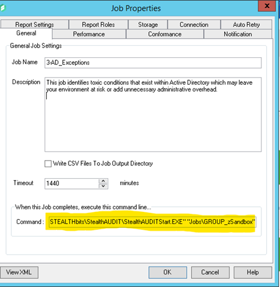
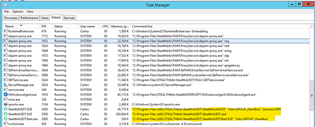

Summary: Job chaining in StealthAUDIT provides the ability of one job to spawn the execution of another job or job group upon completion. This execution method mimics that of a scheduled task run but is controlled through the completion of the calling job.
Issue: Job chaining can be useful in scenarios where it becomes necessary to execute dependent jobs located in a different area of the job tree only after the source job has completed.
Instructions:
To chain a job or job group, two pieces of information is required:
1. Path and name of the StealthAUDITStart.EXE executable. The command directly calls StealthAUDITStart.EXE which in-turn launches StealthAUDIT.EXE.
2. The name of the job or the relative path of the job group to execute. The name of the object to be executed is passed as a parameter.
-
-
- For jobs, the name of the Job as displayed in the StealthAUDIT job tree; e.g., “NewJob”
- For job groups, the relative path of the group from the job tree perspective; e.g., the relative path of the group “1.Groups” as found in the Active Directory solution set would be “Jobs\GROUP_Active Directory\GROUP_1.Groups”
-
To implement job chaining where a job or a group is executed by a calling job upon completion, perform the following:
1. Generate the command that will be used to spawn the execution of the job or job group. Command elements consist of the path and name of the executable StealthAUDITStart.EXE and the job or job group to execute. Example commands are as follows:
- For the Job “NewJob”: “C:\Program Files (x86)\STEALTHbits\StealthAUDIT\StealthAUDITStart.exe” “NewJob”
- For the group “1.Groups”: “C:\Program Files (x86)\STEALTHbits\StealthAUDIT\StealthAUDITStart.exe” “Jobs\GROUP_Active Directory\GROUP_1.Groups”
2. Copy/Paste the manufactured command in the “Command” text entry box found in the job properties of the calling job

3. To test, execute the calling job. If the syntax is correct, the job or job group called will execute in a separate transparent instance of StealthAUDIT visible only as a process in task manager. Validate execution by viewing the executable and object parameters.

Channel: Customer-Facing
Submitted by: Carlos Mejia
Product: StealthAUDIT
Affected Versions: All versions
Affected Module: SA - Core
Dev Ticket: n/a
Resolved In Version: n/a
KB Type: How To